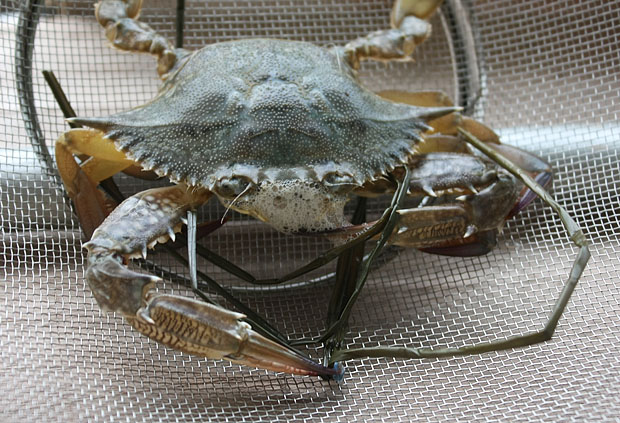
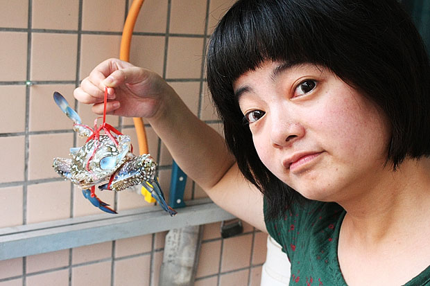

中秋去海边，正好赶上一年中吃海鲜的最佳时间。湛江的海鲜据说又是广东境内最新鲜美味又便宜的，路上还看见装着海鲜的大货车运往成都和重庆，没想到四川的海鲜也是从这儿运过去的啊。 在北京还是很少吃海鲜的，自己不会做，去外面吃又贵，所以这次来，当然要大吃特吃了。而且这里除了海鲜，还有无数甜品，小吃诱惑着我，结果是每天都吃得很撑，节前减肥刚有点成效，这么一趟回来，又胖回去了。 中秋那天，买了二十来只螃蟹回家蒸着吃，分了两次来清蒸。才知道原来做螃蟹还是很简单的嘛。只要记得下锅前把蟹盖打开先清洗干净腮和内脏就好了。

螃蟹时不时就爱吐泡泡

螃蟹生猛，拎起来也一个劲地转，本来想照个正脸的，太不配合了

这只意识到命不久矣，挣脱出来，我们赶紧弄到炉子上烤烤，脚还在那扑腾，太残忍啦
一大锅美味出炉，这颜色太诱人了，马上就要被我们啃得七零八落